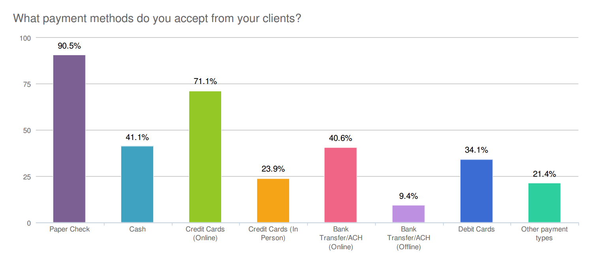

Solving customer needs through digital experiences.
FreshBooks
Getting Paid Faster with Online Payments
FreshBooks helps small business owners stay organized and easily get paid. With everything securely stored in one place, keeping tabs on the finances of your small business is a cinch.
My Role
- Strategy
- Research
- UI/UX Design
- User Testing
In 2014, FreshBooks set out on an ambitious mission — building a totally redesigned version of our accounting software.
This new version of FreshBooks is not just a visual redesign, but a whole new product — one that helps customers solve the same old problems, but in simpler and more modern ways. This platform has been designed, tested and rebuilt from the ground up so our teams can build new improvements faster than ever before.
When it comes to independent businesses, cash flow is important, and getting paid quickly is essential to running a successful business. Aside from
“Waiting for a check, going to the bank, then cashing it, is ridiculously annoying. I would get paid a lot quicker if they could do this online.”
— FreshBooks Customer
From our research, we learned that when it comes to getting paid, most freelancers or small businesses typically accept a variety of payment methods that best suit their client's needs. Though, many of our customers see value in using Online Payments versus analog payment methods (ie. cash or checks), it still is seen as a hassle and a tax — a necessary evil that’s first and foremost a service for their clients to simplify the process of making a payment.
A lot of our research and industry data indicates and supports the fact that cash is not the future. Small businesses in particular who are prepared and able to accept Online Payments and credit cards are the ones that are best positioned to flourish. As newer, growing forms of payment become more popular, they will eventually supplant cash as the go-to payment methods in all situations. Our single biggest opportunity was to focus on businesses who mostly get paid by check. Given the growing adoption of Online Payments in our space, and the death of the paper check, we see a few major opportunities to improve our customers' lives.
How might we help businesses who are not yet comfortable using Online Payments, to discover the benefit and help them begin accepting Online Payments so that they can get paid easier?
For those customers already using Online Payments, with other payment services like Stripe or PayPal, we have also decided to take another approach. For these customers our focus is more around how might we bring that existing payment experience inside the FreshBooks ecosystem to add even greater value for them in FreshBooks? And finally for for their clients, we decided to focus on how might we make Online Payments ridiculously easy that makes it's easier to use than writing a check?
Building native payment capability within FreshBooks has significantly reduced the time it takes for businesses to get paid for their work. When paid by credit card, 75% of invoices are paid within 10 days. It takes about 40 days for the same percentage of invoices to be paid via cash and checks. Beyond online credit card payments, FreshBooks is constantly researching and investigating new payments methods and improving these experiences to ensure that customers of small businesses have the best payments tools available to them.
The concept
Say Goodbye To Chasing Checks
Small businesses who use Online Payments get paid on average 5 days faster. Put an end to payment delays and make it easier for your clients to pay you by giving online payment options.
Take recording Payments off your to-do list
We know long setup processes can be dreadful, so we made it ridiculously easy to get setup for online payments. With a single click you're all set up to get paid by credit card. Sit back and watch payments get recorded and the money appear in your bank account – like magic.
Stop wasting time on slow paying clients
Late payments slowing down your business? Avoid having that talk with your clients. Automatically nudge your clients with late payment reminders and add late payment fees, to make sure you get paid on time.
Make it easier for your clients to pay
Clients can pay you right from your invoice—even on their mobile devices. Once a payment is made, the invoice is automatically updated and clients can save a copy of the invoice for thier own records.